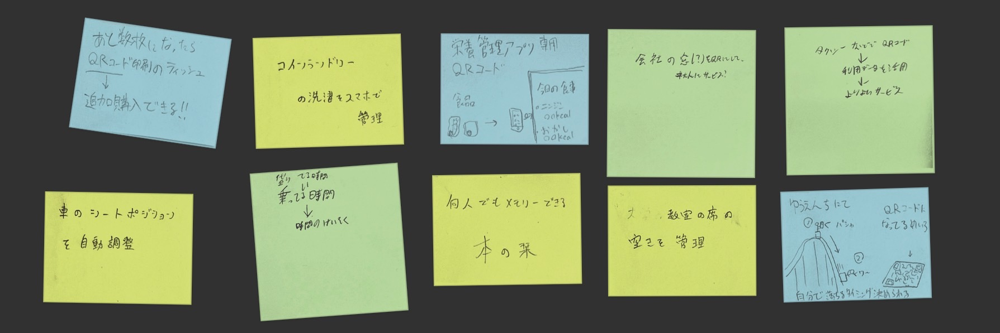
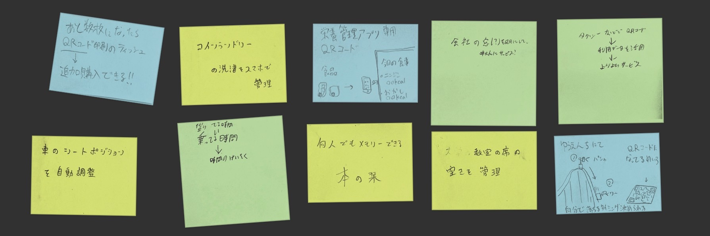

IoTとは？
IoT = Internet of Things（モノのインターネット）
IoTとは、さまざまなモノがインターネットに接続する技術を指します。モノがインターネットを経由しサーバーへと繋がることで、単体ではできなかった
例えば、スマートフォンで操作できる家電や、自動車の運転支援技術、レンタサイクルの管理システムなど、さまざまな場所でIoTが活用されています。
参考にさせていてだいたサイト ▼
株式会社モンスターラボ
IoTのアイデア
＜グループで出たアイデア＞

＜アイデアのスケッチ＞
① 座席管理システム
着席時にQRコードを読み取ることで、座席の空き状況を共有できます。
レストランや大学の教室などで活用できます。
② デジタルしおり
本のQRコードを読み取ればどこまで読んだかを確認、そのページを開いてくれます。
一度返却した図書館の本などで便利な機能です。
② スマートランドリー
コインランドリー専用のアプリを使用することで、残り時間や運転の操作、デジタル支払いなどができます。
スマート家電の機能を参考にしています。

＜アイデアのスケッチ＞
着席時にQRコードを読み取ることで、座席の空き状況を共有できます。
レストランや大学の教室などで活用できます。
本のQRコードを読み取ればどこまで読んだかを確認、そのページを開いてくれます。
一度返却した図書館の本などで便利な機能です。
コインランドリー専用のアプリを使用することで、残り時間や運転の操作、デジタル支払いなどができます。
スマート家電の機能を参考にしています。
IoTの実践
講義内で行ったIoTの実践の様子です。
スマートフォンからの操作で、サーバーを経由しLEDのオンオフを切り替えています。
スマートフォンからの操作で、サーバーを経由しLEDのオンオフを切り替えています。
動画の撮影・編集はNickさんです。ありがとうございます！